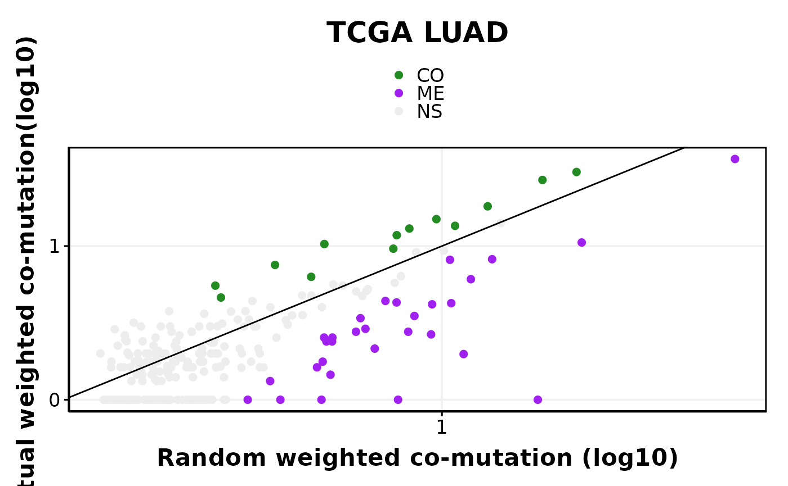

Introduction to finding evolutionary dependencies in cancer data using SelectSim algorithm
Arvind Iyer
2024-08-23
introduction.Rmd- The goal of SelectSim pacakge is to implement the methodology to infer functional inter-dependencies between functional alterations in cancer.
-
SelectSimpackage provides function to generate the backgorund model and other utilites functions.
Installation
- You can install the development version of SelectSim from GitHub with:
# install.packages("devtools")
devtools::install_github("CSOgroup/SelectSim",dependencies = TRUE, build_vignettes = TRUE)- For more details on installation refer to INSTALLATION
Example
- We will run SelectSim algorithm on processed LUAD dataset from TCGA provided with the package.
- Note: This an example for running a processed data. Check other vignette to process the data to create the run_data object needed as input for SelectSim algorithm.
library(SelectSim)
library(dplyr)
#>
#> Attaching package: 'dplyr'
#> The following objects are masked from 'package:stats':
#>
#> filter, lag
#> The following objects are masked from 'package:base':
#>
#> intersect, setdiff, setequal, union
## Load the data provided with the package
data(luad_run_data, package = "SelectSim")Data Description & Format
- The loaded data is list object which consists of
- M: a list object of GAMs which is presence absence matrix of alterations
- tmb: a list object of tumor mutation burden as data frame with column names (should be) as sample and mutationn
- sample.class a named vector of sample annotations
- alteration.class a named vector of alteration annotations
# Check the data strucutre
str(luad_run_data)
#> List of 3
#> $ M :List of 2
#> ..$ M :List of 2
#> .. ..$ missense : num [1:396, 1:502] 0 0 0 0 0 0 0 0 0 0 ...
#> .. .. ..- attr(*, "dimnames")=List of 2
#> .. .. .. ..$ : chr [1:396] "AKT1" "ALK" "APC" "AR" ...
#> .. .. .. ..$ : chr [1:502] "TCGA-05-4244-01" "TCGA-05-4249-01" "TCGA-05-4250-01" "TCGA-05-4382-01" ...
#> .. ..$ truncating: num [1:396, 1:502] 0 0 0 0 0 0 0 0 0 0 ...
#> .. .. ..- attr(*, "dimnames")=List of 2
#> .. .. .. ..$ : chr [1:396] "AKT1" "ALK" "APC" "AR" ...
#> .. .. .. ..$ : chr [1:502] "TCGA-05-4244-01" "TCGA-05-4249-01" "TCGA-05-4250-01" "TCGA-05-4382-01" ...
#> ..$ tmb:List of 2
#> .. ..$ missense :'data.frame': 502 obs. of 2 variables:
#> .. .. ..$ sample : chr [1:502] "TCGA-05-4244-01" "TCGA-05-4249-01" "TCGA-05-4250-01" "TCGA-05-4382-01" ...
#> .. .. ..$ mutation: num [1:502] 163 253 270 1328 100 ...
#> .. ..$ truncating:'data.frame': 502 obs. of 2 variables:
#> .. .. ..$ sample : chr [1:502] "TCGA-05-4244-01" "TCGA-05-4249-01" "TCGA-05-4250-01" "TCGA-05-4382-01" ...
#> .. .. ..$ mutation: num [1:502] 24 45 40 206 17 18 73 31 176 108 ...
#> $ sample.class : Named chr [1:502] "LUAD" "LUAD" "LUAD" "LUAD" ...
#> ..- attr(*, "names")= chr [1:502] "TCGA-05-4244-01" "TCGA-05-4249-01" "TCGA-05-4250-01" "TCGA-05-4382-01" ...
#> $ alteration.class: Named chr [1:396] "MUT" "MUT" "MUT" "MUT" ...
#> ..- attr(*, "names")= chr [1:396] "AKT1" "ALK" "APC" "AR" ...Running SelectX
- We use the function
selectX()which generates the background model and results. - The parameters for the functions are:
-
M: the list object of GAMs & TMB -
sample.class: a named vector of samples with covariates -
alteration.class: a named vector of alteration with covariates -
min.freq: Number of samples a gene should be mutated in atleast -
n.permut: Number of simulation to do -
lambda: Penalty factor used in computing penalty vector -
tao: Fold chnage factor used in computing penalty vector -
maxFDR: FDR rate to call significnat results
-
- The function returns a list object which contains the background model and results.
result_obj<- selectX( M = luad_run_data$M,
sample.class = luad_run_data$sample.class,
alteration.class = luad_run_data$alteration.class,
n.cores = 1,
min.freq = 10,
n.permut = 1000,
lambda = 0.3,
tao = 1,
save.object = FALSE,
verbose = FALSE,
estimate_pairwise = FALSE,
maxFDR = 0.25)
#> Total Time: 4.465 sec elapsedIntrepreting the results
- Lets look into the results
head(result_obj$result[,1:10],n=5)
#> SFE_1 SFE_2 name support_1 support_2 freq_1 freq_2
#> KRAS - TP53 KRAS TP53 KRAS - TP53 154 221 0.30677291 0.4402390
#> EGFR - KRAS EGFR KRAS EGFR - KRAS 57 154 0.11354582 0.3067729
#> STK11 - TP53 STK11 TP53 STK11 - TP53 59 221 0.11752988 0.4402390
#> BRAF - KRAS BRAF KRAS BRAF - KRAS 35 154 0.06972112 0.3067729
#> KRAS - STK11 KRAS STK11 KRAS - STK11 154 59 0.30677291 0.1175299
#> overlap w_overlap max_overlap
#> KRAS - TP53 49 35.8760174 154
#> EGFR - KRAS 0 0.0000000 57
#> STK11 - TP53 13 9.5456386 59
#> BRAF - KRAS 2 0.9821429 35
#> KRAS - STK11 28 25.9230769 59Filtering significant hits
# Filtering significant hits and counting EDs
result_obj$result %>% filter(nFDR2<=0.25) %>% head(n=2)
#> SFE_1 SFE_2 name support_1 support_2 freq_1 freq_2
#> KRAS - TP53 KRAS TP53 KRAS - TP53 154 221 0.3067729 0.4402390
#> EGFR - KRAS EGFR KRAS EGFR - KRAS 57 154 0.1135458 0.3067729
#> overlap w_overlap max_overlap freq_overlap r_overlap w_r_overlap
#> KRAS - TP53 49 35.87602 154 0.3181818 99.02908 58.69631
#> EGFR - KRAS 0 0.00000 57 0.0000000 31.22148 16.85637
#> wES wFDR nES mean_r_nES nFDR cum_freq nFDR2 type FDR
#> KRAS - TP53 -16.13638 0 -14.18270 -1.953683 0 375 0 ME TRUE
#> EGFR - KRAS -11.91926 0 -10.72977 -1.189488 0 211 0 ME TRUE
result_obj$result %>% filter(nFDR2<=0.25) %>% count(type)
#> type n
#> 1 CO 13
#> 2 ME 30Plotting a scatter plot of co-mutation
# Filtering significant hits and plotting
options(repr.plot.width = 7, repr.plot.height = 7)
obs_exp_scatter(result = result_obj$result,title = 'TCGA LUAD')
SessionInfo
# Print the sessionInfo
sessionInfo()
#> R version 4.3.2 (2023-10-31)
#> Platform: x86_64-conda-linux-gnu (64-bit)
#> Running under: CentOS Linux 7 (Core)
#>
#> Matrix products: default
#> BLAS/LAPACK: /mnt/ndata/arvind/envs/R_4/lib/libopenblasp-r0.3.25.so; LAPACK version 3.11.0
#>
#> locale:
#> [1] LC_CTYPE=en_US.UTF-8 LC_NUMERIC=C
#> [3] LC_TIME=en_US.UTF-8 LC_COLLATE=en_US.UTF-8
#> [5] LC_MONETARY=en_US.UTF-8 LC_MESSAGES=en_US.UTF-8
#> [7] LC_PAPER=en_US.UTF-8 LC_NAME=C
#> [9] LC_ADDRESS=C LC_TELEPHONE=C
#> [11] LC_MEASUREMENT=en_US.UTF-8 LC_IDENTIFICATION=C
#>
#> time zone: Europe/Zurich
#> tzcode source: system (glibc)
#>
#> attached base packages:
#> [1] stats graphics grDevices utils datasets methods base
#>
#> other attached packages:
#> [1] dplyr_1.1.4 SelectSim_0.0.1.3
#>
#> loaded via a namespace (and not attached):
#> [1] gtable_0.3.4 xfun_0.41 bslib_0.6.1 ggplot2_3.4.4
#> [5] rstatix_0.7.2 lattice_0.22-5 vctrs_0.6.5 tools_4.3.2
#> [9] generics_0.1.3 parallel_4.3.2 tibble_3.2.1 fansi_1.0.6
#> [13] highr_0.10 pkgconfig_2.0.3 Matrix_1.6-5 desc_1.4.3
#> [17] ggridges_0.5.5 rngtools_1.5.2 RcppParallel_5.1.6 lifecycle_1.0.4
#> [21] farver_2.1.1 compiler_4.3.2 stringr_1.5.1 tictoc_1.2
#> [25] textshaping_0.3.7 munsell_0.5.0 codetools_0.2-19 carData_3.0-5
#> [29] htmltools_0.5.7 sass_0.4.8 yaml_2.3.8 pillar_1.9.0
#> [33] pkgdown_2.0.7 car_3.1-2 ggpubr_0.6.0 jquerylib_0.1.4
#> [37] tidyr_1.3.0 cachem_1.0.8 doRNG_1.8.6 iterators_1.0.14
#> [41] abind_1.4-5 foreach_1.5.2 tidyselect_1.2.0 digest_0.6.34
#> [45] stringi_1.8.3 reshape2_1.4.4 purrr_1.0.2 fastmap_1.1.1
#> [49] grid_4.3.2 colorspace_2.1-0 cli_3.6.2 magrittr_2.0.3
#> [53] Rfast_2.1.0 utf8_1.2.4 broom_1.0.5 withr_3.0.0
#> [57] scales_1.3.0 backports_1.4.1 RcppZiggurat_0.1.6 rmarkdown_2.25
#> [61] ggsignif_0.6.4 ragg_1.2.7 memoise_2.0.1 evaluate_0.23
#> [65] knitr_1.45 doParallel_1.0.17 rlang_1.1.3 Rcpp_1.0.12
#> [69] glue_1.7.0 jsonlite_1.8.8 R6_2.5.1 plyr_1.8.9
#> [73] systemfonts_1.0.5 fs_1.6.3